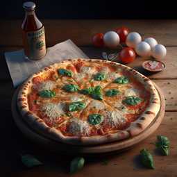

Маргаритта

Гармоничное сочетание теста, сыра, томатов и базилика! Выпекается классическая Пицца Маргарита в домашних условиях в хорошо разогретой духовке очень быстро. Её тонкая основа получается хрустящей, а моцарелла остается нежной.

А знаете ли вы, что, согласно статистике, пицца с ветчиной и грибами является наиболее популярной в нашей стране? Это действительно так: именно этот вид чаще всего заказывают в пиццериях России. Что ж, это вовсе не удивительно: сочетание ингредиентов в таком блюде самое что ни на есть гармоничное! Но пиццу с ветчиной и грибами без особых проблем можно приготовить и самостоятельно, в чем мы и предлагаем убедиться прямо сейчас. И, пожалуйста, не пугайтесь использования дрожжевого теста: приготовление его по нашему рецепту гарантирует безупречный результат!
Наивкуснейшее простое блюдо для всей семьи на ужин и перекус. Классическая пицца Пепперони готовится просто и без проблем. Для начинки в ней используются только два продукта: сыр и колбаса. Соусы к пицце могут быть любые на ваш вкус. А еще пиццу можно заготавливать впрок и печь вынимая из морозилки. Удобно правда?
Гармоничное сочетание теста, сыра, томатов и базилика! Выпекается классическая Пицца Маргарита в домашних условиях в хорошо разогретой духовке очень быстро. Её тонкая основа получается хрустящей, а моцарелла остается нежной.